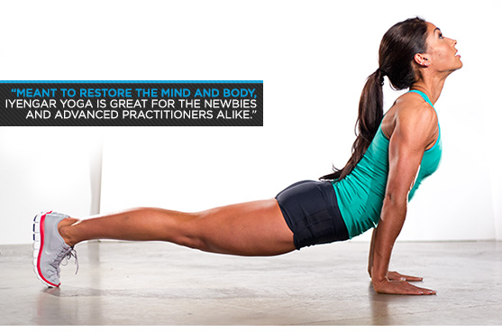

Yoga
Yoga and strength training shouldn't be mutually exclusive. Learn how mixing three classic poses into your strength routine can improve your performance in the gym—and vice versa!
Strength training and yoga may seem like they're on opposite ends of the fitness spectrum. Many yogis—especially women—are apprehensive about strength training because they fear adding bulk or losing mobility. On the other hand, many men who lift regularly will often refuse to step foot in a yoga room for fear of being perceived as a wuss.
However, as someone who has trained and taught in both worlds, I can attest that yoga and strength training are essentially two sides of the same coin. This is especially the case with two of my favorite modalities, bodyweight training and kettlebells. The deep-breathing yin of yoga is the perfect counterbalance to the high-tension yang of a kettlebell swing or press, or a bodyweight pull-up or handstand push-up.
What if I told you your yoga practice would actually improve if you also trained for strength? The reverse is true, too: Your strength practice can be improved with the addition of yoga. And it doesn't have to be a "today is strength, tomorrow is yoga" relationship, either. You can unite both practices to create a more balanced training regimen! Here's how to do it, focusing on kettlebell work in particular.
MORE THAN JUST FLEXIBILITY OR STRENGTH
Yoga comes from a root meaning "to yoke or unite" and aims to align you with your highest nature. The philosophies behind yoga include guidelines to improve your health through breath exercises, posture correction, flexibility, and the strengthening of the mind-body connection.
Those are the same reasons many people begin strength training. For instance, with kettlebell work, trainees are often drawn in by the weight's potential to help them move better, build muscle evenly in the body, and improve posture and focus with minimal equipment necessary. Like yoga, the kettlebell is also an all-star at developing strength, agility, and endurance. In both cases, the benefits extend beyond the gym.
The similarities definitely don't end there. Let's break down three postures and three kettlebell-specific movements that complement each other when practiced together.
YOGA INCREASES RANGE OF MOTION
You may think that range of motion is the same thing as flexibility, but it's a little different. Many guys know they have a tight muscle group or two—most frequently the hamstrings, glutes, pecs, and shoulders. But they may not realize the limitations any of these place on their ability to train through a full range of motion. The more you train them through a limited range of motion, the more limited you become as a lifter—and a functional human being.
One of Cutler's limitations was his tight shoulder joints, which he found didn't allow him to stretch his pectorals fully during pressing movements, which in turn reduced his ability to build chest mass. Increased flexibility opened him up to a better pressing motion—and the type of development that helped him eventually win four Sandow trophies.
A well-designed yoga class emphasizes moves that open up virtually all of these problem areas, because everyone, everywhere, can benefit from opening up their hunched shoulders and tight hips. Consider this quality movement training of the first order.
"YOGA IS MORE LIKE QUALITY MOVEMENT PRACTICE THAN EXERCISE. IT MAY FLOOR YOU AT FIRST, BUT OVER TIME ITS BENEFITS WILL SURPRISE YOU."
YOGA IMPROVES BREATHING
You might think that you breathe perfectly fine. But you'd probably find yourself challenged by how much yoga asks you to focus on inhaling and exhaling, particularly while you're attempting to hold tough poses in unfamiliar movement planes.
As a yoga class gets more intense, the breathing slows down rather than speeding up. This teaches you to take in long, slow breaths when you need them most, expanding your lung capacity to allow you to take in the same or greater amount of oxygen from fewer inhalations.
This is one reason you might feel a kind of bliss akin to the legendary "runner's high" during a yoga class. More importantly, you're training your body to oxygenate itself more efficiently. That's important for cardio activity, strength training, and yes, muscle-building.
YOGA STRENGTHENS STABILIZERS
Every yogi out there has a story (or twenty) about that time they saw a strong, muscular guy walk into class and get totally owned by a routine the smaller, less muscular women were rocking. Why does this happen? Because that guy, who no doubt earned his physique in the classic two-feet-on-the-ground, two-hands-on-the-bar power stance, got shown that he remains weak in his stabilizer muscles.
YOGA TAKES YOU OUT OF YOUR TRADITIONAL GYM STANCE, REQUIRING YOU TO GET STRONGER IN EVERY MOVEMENT PLANE.
Yoga includes many unique moves in addition to basics such as down dog, plank, and warrior variations. Depending on the whim of your teacher, it can also include lateral, twisting, and spinal-arch moves, as well as plenty of balance challenges—all of which are not typically present in lifting exercises.
These moves force your body to work in new and unaccustomed ways, strengthening smaller stabilizer muscles and increasing joint health along the way. You'll get stronger, sure, but you might also shore up a weak link that would otherwise lead you go get injured.
In other words, a good yoga class can cover a lot of the bases that you think you're covering (but might not be) with your long, complicated pre-hab and mobility routines.
YOGA BALANCES YOU
This could mean a lot of things, but I'm not talking chakras here. First, yoga literally includes poses that help you improve your balance. One-legged poses, headstands, handstands, arm balances, and plenty of other tough challenges are all fair game. And no matter how many push-ups or bodyweight squats you can do, a good yoga teacher can find ways to make these expose your weaknesses.
Second, yoga encourages your body to move in unaccustomed ways by spending time in totally familiar postures. While athletes consider every workout to be beneficial—and rightfully so—most of us often end up performing the same types of movements too frequently. This is all well and good until that day comes when, all of a sudden, you can't remember the last time you weren't in pain.
I've heard it time and time again: "My back/hips/shoulders were always bugging me, but yoga made it 100 times better." The only problem with that is that yoga works well enough that most of us stop doing it after experiencing its benefits.
MANY MEN FEEL SO GREAT AFTER A FEW YOGA CLASSES, THEY FORGET TO KEEP GOING. DON'T BE THAT GUY.
Fit And Flexible: Popular Yoga Styles
Don't give in to your foam mat phobia! Adding yoga to your workout regimen can help increase your flexibility and overall health. Learn the yoga jargon, choose a style, and you'll be ready for the studio.
Yoga is all the rage, and for good reason. Anyone who has seen a little old lady wrap her feet around her head cannot help but feel a little impressed. You might be ready to join the fun, but you're also feeling a little intimidated. Do I have to wear yoga pants? Is the instructor going to make me do a headstand on the first day? What the heck does "namaste" mean?
Don't worry, you don't have to be a hard-core yogi to unroll your mat and hit a pose. Men, women, pro athletes, and nine-to-fivers alike have all hopped on the yoga bandwagon. The variety of styles allows beginners, gurus, and everyone in between to benefit from this ancient practice.
Although each style of yoga is similar in its goal to help you increase your range of motion, body awareness, and mental health, they all differ in their approach. If you're not sure which style is best for you, here's some help. Try one or try them all, but just try!
Bikram (BIK-ram)
Turn up the heat and fill up your water bottle for Bikram yoga. This type, often referred to as "hot" yoga, is practiced in studio at 40.6 degrees Celsius or 105 degrees F— that's hot! During the 90-minute class, yogis do 26 movements and two breathing exercises. You torch calories and get your sweat on.
Bikram practitioners enjoy the heat because higher temperatures make muscles more limber and pliable, enabling a deeper stretch. The heat also helps detoxify your body through perspiration—you'll discover sweat glands you didn't even know you had! If you choose Bikram, be ready for an intense, fitness-building experience.
Iyengar (i-YEN-gar)
Aches and pains? Iyengar, also known as restorative yoga, emphasizes healing and realignment through supportive postures and sequences. This variation uses a number of props, such as wooden gadgets, belts, and ropes to add variety and movement precision. Iyengar borrows from Ashtanga and combines them to create different groups of asanas, or movements.
Aside from the variety, this style of yoga is also great for people who are recovering from an injury. The props allow for greater control in the movements and less stress on the muscles. Meant to restore the mind and body, Iyengar yoga is great for the newbies and advanced practitioners alike.

Prenatal Yoga
Just as the name suggests, prenatal yoga is for mommies-to-be. This style of yoga adapts traditional, Hatha poses to be gentler and less stressful for both the developing baby and the mother.
It is recommended that pregnant women get 30 minutes or more of moderate exercise per day, unless they're under particular medical restrictions. Physical activity not only keeps mom healthy, but can improve her posture, decrease pregnancy discomfort like back pain and fatigue, relieve stress, and develop stamina needed for labor and delivery. Practicing yoga is a great option for daily activity, especially if you want an alternative to strength or aerobic training.
THE GOBLET SQUAT
Malasana is a yoga pose in which you essentially hold the bottom position of a squat. When teaching this move in class, I would see many yogis struggling. Either they weren't squatting deep enough, or they were unable to keep their heels flat on the ground.
As we grow older, our ability to squat properly diminishes even further if we don't maintain it. Practicing goblet squats, a move popularized by strength coach Dan John, can help you hone this essential movement pattern.
Loading a squat again can seem intimidating if you're new to weight training, but in this case, you'll be happy to know it actually makes the move easier. Loading the front of the body with weight helps you balance at the bottom position of the squat.
Sure, you can do it with a weight plate or dumbbell, but holding the kettlebell allows you to use your elbows to push the knees out, allowing you to own the bottom position more easily. It's often the first kettlebell lift taught to beginners, because it doesn't require much weight and can quickly teach almost anyone to squat properly.
To do a goblet squat:
1.Stand with feet around hip-width apart with your feet slightly turned out. Grab onto the horns of the bell, with elbows tucked firmly at the sides of your body.
2.Inhale into your abdomen as you descend, stopping right when your elbows touch the inside of your thighs.
3.Exhale as you return to standing position, fully extending your hips forward and locking your knees. Focus on keeping your back straight and heels down during the entire movement.
As a warm-up or mobility drill, you'll want to practice it at a moderately slow pace, pausing at the bottom position for anywhere from 3-5 seconds. The time under tension will help you boost mobility and squat deeper. If you're performing it for reps like in the program below, only a slight pause is necessary.
TURKISH GET-UP
If you enjoy the flow of yoga's sun salutation, then you'll love the Turkish get-up! It's graceful sequence combines strength, balance, and coordination. It can give you a lot of bang for your buck, just like a properly executed sun salutation.
Just as developing intense focus and presence is a constant theme in yoga, the get-up requires you to carefully manipulate your body through multiple planes of motion around the kettlebell. If you're not focused while performing the get-up, that bell can come tumbling down!
To do a Turkish get-up:
1.Start by lying on your back with your right arm extended overhead, holding the kettlebell firmly. Make sure your elbow is locked—not flexed!
2.Bend your right knee in toward your butt. Your left leg and arm should be extended flat on the floor at around 45 degrees.
3.Keeping your right arm locked overhead, shift your weight onto your left forearm. Next, press up onto your left palm and your right foot as you extend your hips up into a straight bridge position.
4.Now bring your extended left leg behind you into a lunge. Keep your eye on the kettlebell and come to a full standing position. Carefully reverse the movement and repeat on your left side.
Yes, it can seem complicated at first. If you're a beginner, practice the sequence first without weight until you memorize the transitions. Then try it with 10-15 pounds before working your way to heavier loads. In time, you'll be surprised by how much weight you can move!
One of the benefits of practicing the get-up regularly is that it develops strength that carries over to exciting poses in yoga like arm balances. The get-up can increase strength in your shoulders, particularly in the stabilizer muscles, which can help you hold poses like the crow or flying pigeon with confidence.